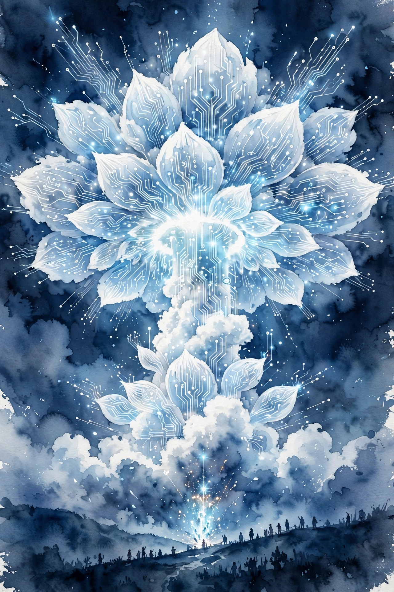
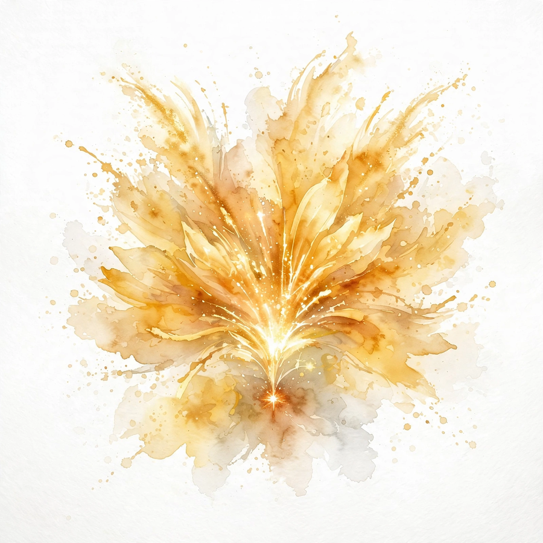
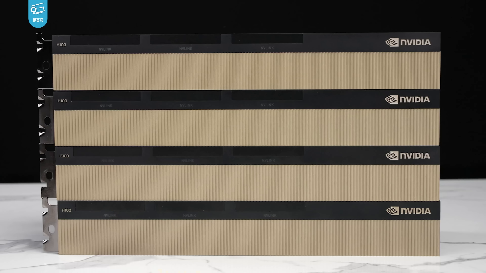
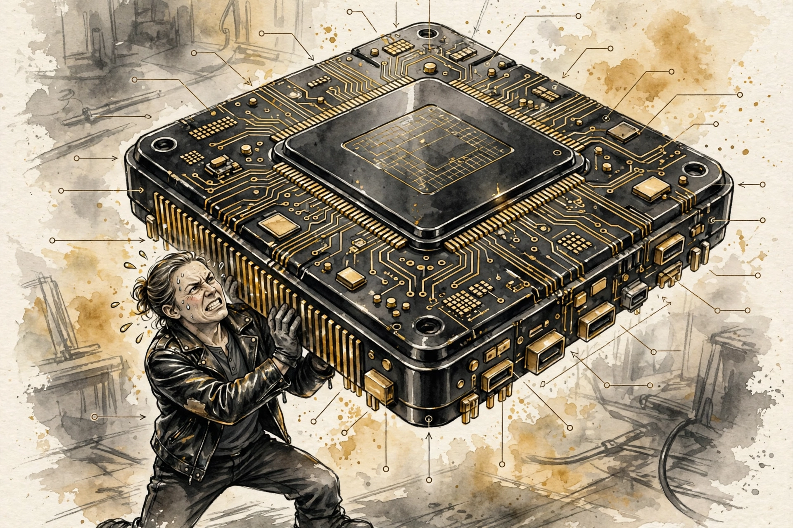
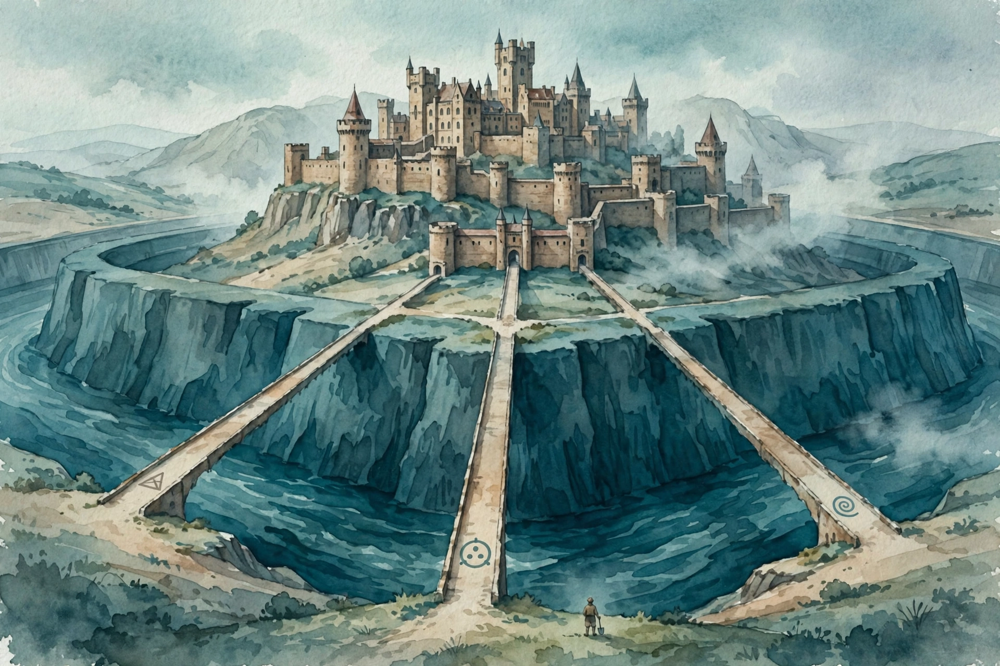

Acquired · Episode 10 · Companion
NVIDIA Part III: The Dawn of the AI Era
The payoff of the trilogy. ChatGPT detonates, data center revenue jumps from $4 billion to $10 billion in quarters, NVIDIA crosses $1 trillion, and the episode asks the hardest question: does the moat persist? This companion follows the episode chapter by chapter, 2022 to 2023.
Listen. The official Acquired episode audio (about 3 hr 15 min). Times below are proportional estimates from the transcript, which carries no timestamps.
Source fact A claim from the episode transcript. Interpretation My read on what it means. Times marked ~ are proportional estimates from word position, since the transcript carries no timestamps.


The Bleakest Moment
Source fact Rewind to 2022. Financial markets fall off a cliff: rapid rate rises, the crypto and web3 bubble bursts, banks fail. NVIDIA takes a massive inventory write-off for over-ordering. In the hosts' April 2022 episodes, the word "generative" is never spoken once.
The 70-Year Runway
Source fact The episode rewinds through AI history to show this was not overnight. For decades, AI meant narrow tasks: the Google Brain team redoing the YouTube algorithm around 2013-2014, turning a money-losing acquisition into a juggernaut. AI-powered feed recommendations turned Instagram into a $100-500 billion asset for Meta. Real dollars, narrow models. Then two breakthroughs. First, data and algorithms at internet scale. Second, in 2017, Google Brain publishes "Attention Is All You Need", the Transformer. Machine learning on language had meant autocorrect and translation. The Transformer opened something new.
Then the scaling discovery: GPT-1 at about 120 million parameters, GPT-2 at 1.5 billion, GPT-3 at 175 billion, GPT-4 rumored at about 1.72 trillion. More parameters plus more data equals better next-word prediction, with a weird emergent property: models below about 10 billion parameters hallucinate and babble, past about 100 billion, they start to work. Transformer models scale well precisely because of parallelism: throw more data at training, and you can throw more parallel compute at it too. Parallelism is NVIDIA's home turf, twenty years in the making.
The scaling ladder
Parameters, log scale. Hover for detail.
Source: Acquired, NVIDIA Part III, ~00:15. GPT-4 count is rumored.
The OpenAI-Microsoft Funnel
Source fact 2019: OpenAI converts to for-profit. Microsoft invests $1 billion and becomes the exclusive cloud provider. June 2020: GPT-3. September 2020: Microsoft licenses exclusive commercial use. 2021: GitHub Copilot. Microsoft invests another $2 billion. November 30, 2022: ChatGPT. January 2023: Microsoft invests another $10 billion, integrates GPT into everything. May 2023: GPT-4. Every step of this runs on NVIDIA GPUs in Microsoft's data centers, which is why the exclusive-cloud clause matters so much to NVIDIA's revenue line.
The AI Heard Around the World
The AI heard around the world.
Jensen Huang's phrase for November 30, 2022, as quoted on the episode (~00:52).
Source fact November 30, 2022: ChatGPT launches. The fastest product in history to 100 million users, reached in January 2023. Jensen's phrase for the date: the AI heard around the world
.
The H100 Baseball Card


Source fact In September 2022 NVIDIA splits its architectures: Hopper, named for Grace Hopper, for the data center H100, and Lovelace, Ada Lovelace, for consumer RTX 40xx cards. The H100 numbers: $40,000 per GPU, the price to Amazon, Google, Meta. 30x faster than the A100, only about 2.5 years older. 9x faster specifically for AI training, purpose-built for training LLMs. 18,500 CUDA cores, 640 tensor cores specialized for matrix multiplication, 80 streaming multiprocessors, close to 20,000 unique cores on one chip. A quarter trillion transistors across 35,000 parts. Weight: 70 pounds, Jensen jokes every keynote that he can barely lift it. It requires robots to assemble, and NVIDIA uses AI to design the chips themselves. Power: meaningfully higher energy usage than the A100. Each generation pushes the edge of physics and is constrained by physics.
Bundle Economics: The DGX Stack
The more you buy, the more you save.
Jensen Huang's pitch line, as quoted on the episode (~01:25).
Source fact NVIDIA does not just sell chips. A DGX box, eight H100s with an ARM CPU and NVIDIA's networking, sells for $150,000-$300,000. A top-of-line DGX H100 system starts at $500,000. The hosts do the math: 8 x $40,000 = $320,000 in GPUs, so roughly $180,000 of the $500,000 is extra margin from selling the solution. Every bundling step up adds margin: the chips have margin, the system has margin on top. Then the DGX GH200 SuperPOD: 256 Grace Hopper DGX racks in one wall, "the AI wall," sold as the first turnkey AI data center. Pricing is "call us." The hosts estimate hundreds of millions of dollars. DGX Cloud rents it back: starting at $37,000 a month for an A100-based system. A listener estimated the build cost of an equivalent A100 DGX at about $120,000, rented at $37K a month. Public cloud pricing at recording: about $30 an hour for eight A100s, about $100 an hour for eight H100s.
Why customers accept it: buy the solution and every developer you already have runs CUDA on day one. "You say solution, I hear gross margin." Jensen's argument: yes, the hardware takes a ton of energy, but the alternative, doing the same work on general-purpose infrastructure, takes even more energy, more time, and more money. If the workloads happen anyway, accelerated computing is the energy-saving path.
Toy: the bundle margin
Do the DGX math the hosts did. Set the GPU price and the box price to see the integration margin. Illustrative model.
The Earnings Detonation
Source fact May 2023, Q1 FY24: revenue $7.2 billion, up 19 percent quarter over quarter, good, especially after the terrible end of 2022. Then the bombshell: forecasting Q2 at $11 billion on unprecedented generative-AI data center demand, up 53 percent quarter over quarter, 65 percent year over year. The stock pops 25 percent after hours. Context: $660 billion market cap in April 2022, crashed below $300 billion, now back over $1 trillion.
August 2023, Q2: total revenue $13.5 billion, up 88 percent quarter over quarter and over 100 percent year over year. Data center: $10.3 billion of the $13.5 billion, up 141 percent from Q1, up 171 percent year over year, for a segment that barely existed five years earlier. The hosts call it one of the most incredible earnings releases by any scaled public company ever. In three months they grew from about $4 billion to $10 billion of data center revenue. Revenue only happens when products ship to customers: this is not pre-orders, this is delivered product paid for.
Two structural details matter. First, concentration: about half of data-center revenue comes from cloud service providers, then consumer internet companies, then enterprises. Five to eight companies drive the number. NVIDIA owns the developer relationship through CUDA, but the customer relationship is intermediated by clouds. DGX Cloud, virtualized DGX rented through Azure, Oracle, and Google, with Hugging Face integration and an about 6-month capex payback, exists to fix exactly that. Second, the pitch got reframed: instead of 1 percent of a $100 trillion TAM, Jensen now points at $1 trillion of hard assets sitting in data centers worldwide, growing at $250 billion of annual capex, and NVIDIA as the most coherent platform for what those data centers become. Gross margin completes the story: 70 percent last quarter, forecasting 72 percent next, versus 24 percent in the pre-CUDA commoditized era.
The detonation quarter
Revenue in billions. Hover for detail.
Source: Acquired, NVIDIA Part III, ~01:39. Data center went from about $4B to $10B in one quarter.
The market-cap arc
Billions of dollars. Hover for detail.
Source: Acquired, NVIDIA Part III, ~01:39.
The Moat, Quantified

Source fact Three quantifications. One, CUDA developers. Released 2006. Four years to the first 100,000 developers. 1 million by 2016. 2 million just two years later. 3 million in 2022. 4 million registered developers by May 2023. The curve goes vertical exactly when AI does. Two, person-years. Ben estimates CUDA headcount per year since 2006 and integrates: approximately 10,000 person-years of engineering have gone into CUDA. The iOS-vs-Android analogy: Apple had an 18-month lead and Android nearly caught up. NVIDIA has a 10-to-15-year lead with thousands of engineers still compounding it. Three, installed base. The 2006 decision that every GPU shipping would be fully CUDA-capable means 500 million CUDA-capable GPUs in the world for developers to target. A scale economy feeding a network economy.
The CUDA developer curve
Registered developers. Hover for detail.
Source: Acquired, NVIDIA Part III, ~02:17. The curve goes vertical exactly when AI does.
China and Export Controls
Source fact Mainland China was 25 percent of NVIDIA's revenue: hyperscalers like Baidu, Alibaba, Tencent. In September 2022 the Biden administration's export controls barred sales of H100s and A100s to China, so NVIDIA created detuned variants, the A800. Geopolitics is now a first-order variable in the bull and bear math. It also showed pricing power: customers accepted lesser chips because even detuned NVIDIA beats the alternative.
Bear vs Bull: The Flank or Nothing
Source fact The episode steelmans both sides. Bear case one, the prize invites attack: data-center GPUs are a ~$30 billion-a-year market heading to ~$50 billion. Too many margin dollars for giants to ignore. Every moat is tested when the castle gets rich. Bear case two, the inference shift: models train once, then run forever. If compute shifts from training, where NVIDIA dominates, to inference, where it is less differentiated, the moat narrows. The bull case: Andreessen was right in 2015-2016. Data center is ~$10.3B of $13.5B quarterly revenue. NVIDIA's share of data-center spend, about 20 percent of a $50B+ run-rate, can keep creeping up. And the replication test is the real bull case: the moat is denominated in person-years, developer count, and booked capacity.
The episode in seven lines
- They never said "generative." Narratives turn faster than anyone expects.
- The spark lands on the fuel. Credit the sixteen years, not the miracle.
- Price in three layers: silicon, software, scarcity.
- You say solution, I hear gross margin. Bundle where you remove risk.
- Judge the detonation by delivered revenue. $13.5 billion, paid for.
- Quantify moats in person-years. Ten thousand, still compounding.
- Stress-test from the flank. The front is accounted for.
Distilled from Acquired, NVIDIA Part III, September 2023. Full episode: youtube.com/watch?v=nFB-AILkamw. Times are proportional estimates from the transcript.
Outro
Source fact The episode closes with the sign-off, who got the truth, and the hosts' takeaways from the dawn of the AI era.